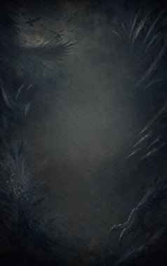
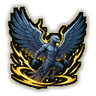
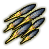
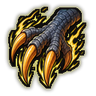
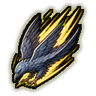

Technique trees › Clans and bloodlines
Tsubasa clan
8 techniques in the Clan tab.
Needs the Tsubasa gene.

Tsubasa Sodachimasu: Wing Grow C
Chakra 15. Grow wings and take to the air for an hour: much faster across the map.
Tsubasa Sodachimasu: Wing Grow C
Chakra 15. Grow wings and take to the air for an hour: much faster across the map.
Grow wings and take to the air for an hour: much faster across the map.
| Rank | Chakra | Cooldown | Class level |
|---|---|---|---|
| C | 15 | 1.2 hours | 3 |
Shiraha Boppatsu: Feather Burst DB
Chakra 12 to 25. A feather explodes into needles in every direction.
Shiraha Boppatsu: Feather Burst DB
Chakra 12 to 25. A feather explodes into needles in every direction.
A feather explodes into needles in every direction.
| Rank | Chakra | Cooldown | Class level |
|---|---|---|---|
| D | 12 | 15 s | 2 |
| B | 25 | 15 s | 9 |

Feather Spears CB
Chakra 15 to 25. Launch a volley of feathers. Steel feathers hit harder and pierce armour.
Feather Spears CB
Chakra 15 to 25. Launch a volley of feathers. Steel feathers hit harder and pierce armour.
Launch a volley of feathers. Steel feathers hit harder and pierce armour.
| Rank | Chakra | Cooldown | Class level |
|---|---|---|---|
| C | 15 | 10 s | 4 |
| B | 25 | 12 s | 9 |

Talon Growth C
Chakra 15. Grow dangerous talons for half an hour.
Talon Growth C
Chakra 15. Grow dangerous talons for half an hour.
Grow dangerous talons for half an hour.
| Rank | Chakra | Cooldown | Class level |
|---|---|---|---|
| C | 15 | 1.2 hours | 5 |

Taka Tobikomu: Falcon Dive CB
Chakra 20 to 30. Dive from the sky through everyone in a line. The divebomb spins down even harder.
Taka Tobikomu: Falcon Dive CB
Chakra 20 to 30. Dive from the sky through everyone in a line. The divebomb spins down even harder.
Dive from the sky through everyone in a line. The divebomb spins down even harder.
| Rank | Chakra | Cooldown | Class level |
|---|---|---|---|
| C | 20 | 15 s | 6 |
| B | 30 | 20 s | 10 |
Tori Sakebimasu: Bird Scream C
Chakra 20. A piercing hunting call that dazes every enemy nearby.
Tori Sakebimasu: Bird Scream C
Chakra 20. A piercing hunting call that dazes every enemy nearby.
A piercing hunting call that dazes every enemy nearby.
| Rank | Chakra | Cooldown | Class level |
|---|---|---|---|
| C | 20 | 30 s | 5 |
Kenjitsu Tsubushimasu: Sonic Burst BA
Chakra 20 to 30. Tear through the air at enormous speed for ten seconds.
Kenjitsu Tsubushimasu: Sonic Burst BA
Chakra 20 to 30. Tear through the air at enormous speed for ten seconds.
Tear through the air at enormous speed for ten seconds.
| Rank | Chakra | Cooldown | Class level |
|---|---|---|---|
| B | 20 | 33 s | 9 |
| A | 30 | 33 s | 13 |
Kōtetsu Umō Shōgai: Steel Wing Shield C
Chakra 20. Wrap the wings around the user as a steel shield.
Kōtetsu Umō Shōgai: Steel Wing Shield C
Chakra 20. Wrap the wings around the user as a steel shield.
Wrap the wings around the user as a steel shield.
| Rank | Chakra | Cooldown | Class level |
|---|---|---|---|
| C | 20 | 30 s | 6 |
Chakra is the technique's base cost, the number in its def. In play it is multiplied by the pawn's chakra energy usage multiplier, which traits (chakra artificer 90%, volatile conduit 110%), World of Naruto genes and jutsu enhancements change, so the technique window can show a slightly different number for each ninja. Cooldowns are in-game time, as the technique window shows them, and the pawn's cooldown stat shortens or lengthens them. World of Naruto gives every ninja a base of 100 maximum chakra; genes and traits change it.